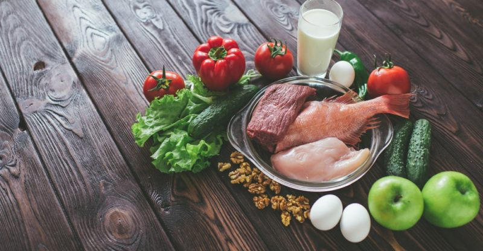

FitX
Indian Diet Plan for Weight Loss

"It took more than a day to put it on. It will take more than a day to take it off."
7-Day Indian Diet Plan For Weight Loss
In all honesty, not all aspects of any cuisine are healthy, and it's a fact we all know. Hence, it would be best to stick to the healthier options it offers. For a successful weight-loss program, you should be conscious of what you consume daily-eating mindfully and paying keen attention to what, how, and where you eat can make a difference.
Calorie calculation is relatively straightforward with the availability of multiple apps today. A 1,400-calorie diet can also be one kachori, two samosas, two gulab jamun, and two cups of tea. While that doesn't sound so bad, there are no shortcuts for losing weight the healthy way. Following a balanced diet is vital is a must.
Let us check out what a healthy 7-day Indian diet plan for weight loss includes.
Healthy Indian Diet Chart For Females (1,200Kcal):
Day 1:
*Early Morning
-1 cup warm water with cinnamon
*Breakfast
-1 cup oats porridge with skimmed milk and walnuts (6 halves)
*Mid-Morning
-1 cup steamed green peas and carrot salad
*Lunch
-1 cup thick methi/palak dal + 3/4th cup steamed rice
*Tea Time
-1 guava
*Mid-Evening
-1 cup hung curd, apple, chia seeds smoothie/plain lassi
*Dinner
-3/4th cup cottage cheese (paneer) and Dalia/millets pulav
Day 2:
*Early Morning
-1/2 cup masala tea/coffee without sugar
*Breakfast
-1/2 cup veg dalia/millets upma+ 1/4 th cup sautéed cottage cheese (paneer)
*Mid-Morning
-1 apple, medium+ walnut 8 halves
*Lunch
-1/2 cup peas (matar) and cottage cheese (paneer) curry+ 1 roti 6″ (No oil/no ghee)
*Tea Time
-1/2 cup masala tea/coffee without sugar
*Mid-Evening
-1 cup hung curd apple, chia seeds smoothie/plain lassi
*Dinner
-2 cheela/dal dosa with tomato, ginger chutney
Day 3:
*Early Morning
-1/2 cup milk with turmeric powder (haldi) and pepper powder (No added sugar)
*Breakfast
-2 pcs idli with 1/2 bowl sambar
*Mid-Morning
-1 cup pomegranate, walnut, sprouts salad
*Lunch
-1 cup peas (matar) dalia pulao
*Tea Time
-1 cup hung curd, apple, chia seeds smoothie/plain lassi
*Mid-Evening
-1/4 cup sautéed cottage cheese (paneer) with veg
*Dinner
-1 cup masala oats and 1 cup vegetable soup
Day 4:
*Early Morning
-1/2 cup milk with turmeric powder (haldi) and pepper powder (No added sugar)
*Breakfast
-2 egg white omelet with grated vegetables
*Mid-Morning
-Apple with boiled peas and walnuts salad
*Lunch
-1 palak/methi paratha with raita (1 cup)
*Tea Time
-Ginger lemon water with 1 tbsp chia seeds (No added sugar)/Green tea
*Mid-Evening
-1 cup tomato soup
*Dinner
-3/4th cup masala Oats/Dalia + 200g grilled fish
Day 5:
*Early Morning
-1/2 cup milk with turmeric powder (Haldi) and pepper powder (No added sugar)
*Breakfast
-1 cup masala oats and walnuts (8 halves)
*Mid-Morning
-1 cup chickpea (chana) chaat
*Lunch
-1 cup pulav (Millets/Dalia with vegetables, boiled peas, and cottage cheese (peas)
*Tea Time
-1/2 cup masala tea/coffee without sugar
*Mid-Evening
-1 cup apple, curd, chia seeds smoothie
*Dinner
-1 chapati (no oil) with 3/4th cup any vegetables (no roots and tuber)
Day 6:
*Early Morning
-1/2 cup masala tea/coffee without sugar
*Breakfast
-3/4th cup poha with vegetables and 1/4th lime wedge and 1 boiled egg white
*Mid-Morning
-1 orange + walnut (8 halves)
*Lunch
-1 cup Millets/ Dalia pulao with vegetables+ 1 small sliced tomato
*Tea Time
-1 cup buttermilk with cumin (jeera) powder and chia seeds
*Mid-Evening
-3/4th cup sprouts chaat with onion tomatoes and chaat masala
*Dinner
-200g chicken sautéed with boiled vegetables and pepper
Day 7:
*Early Morning
-1/2 cup masala tea without sugar
*Breakfast
-2 moong cheela (5″ each) with tomato, ginger Chutney
*Mid-Morning
-1 cup pomegran-ate and carrot salad
*Lunch
-2 phulka (No oil/ no butter/no ghee) with 100g low-fat chicken curry (4 medium pcs)
*Tea Time
-1/2 cup masala tea/coffee without sugar
*Mid-Evening
-1 cup apple, curd, chia seeds smoothie
*Dinner
-1 cup fried rice with Quinoa/ Dalia, Egg, and 100gm Chicken